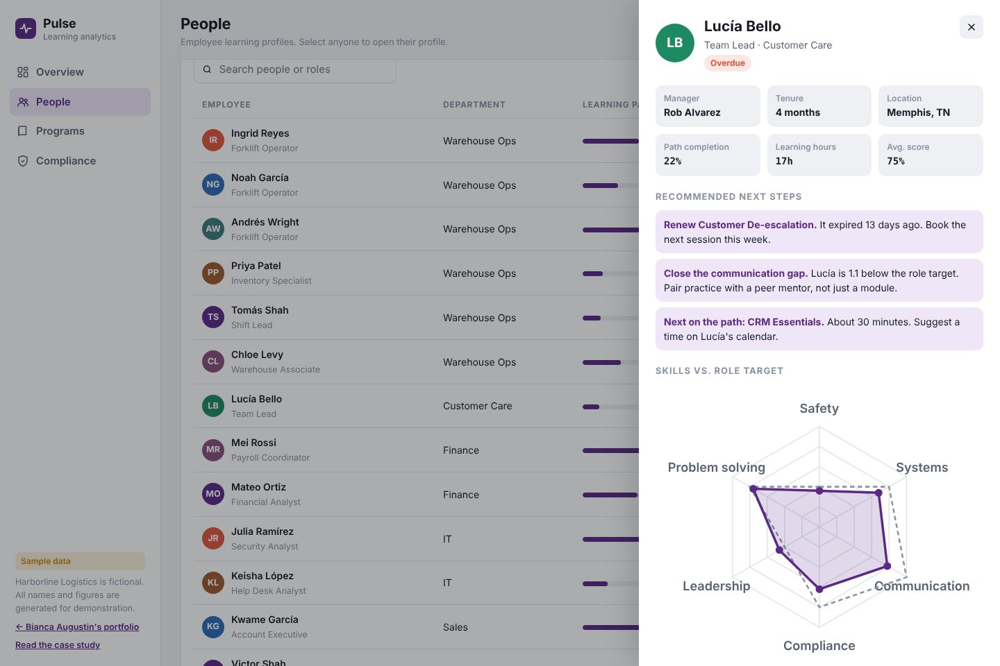

Pulse
A learning analytics dashboard that turns training data into decisions. Leaders see where skills gaps are, managers see who needs support, and every chart ends in a recommended action.

The problem
Most learning dashboards report activity: enrollments, completions, hours. Leaders glance at them, see green numbers, and move on. They rarely answer the questions that matter: Are people getting better at their jobs? Who needs help? What should we do next?
What it shows
- Overview: five KPIs with trend lines, enrollments versus completions over time, completion by department, a skills-gap heatmap against role targets, and insight cards with one-click actions.
- People: a searchable, sortable directory with status flags (on track, at risk, overdue) and CSV export.
- Employee profiles: a skills radar against role targets, the learning path, certifications with expiry dates, recent activity, and recommended next steps generated from that person's data.
- Programs and compliance: how each course is performing, including Spot the Phish and Line Check, plus every certification that's due or overdue.


Key design decisions
Skills against targets, not just scores
The heatmap compares each department's average proficiency to what the role actually requires, and outlines the gaps.
Why: a 3.0 is great for one role and a problem for another. Context turns a number into a priority.
Recommendations a manager can act on today
Profile recommendations are specific: renew this certification, close this skill gap with a peer mentor, have a conversation after three quiet weeks.
Why: managers are busy. The dashboard should do the analysis and hand them the next step.
Not every gap gets a course
Insights recommend scheduling changes, mentoring, and scenario practice as often as new training.
Why: the same performance-consulting mindset from my Problems & Solutions page, applied to real data.
Quiet design, one accent
Neutral surfaces, a single plum accent, and status colors used only for status. Numbers are set in a monospaced face so columns line up.
Why: in a data tool, the data should be the loudest thing on the screen. It also works in dark mode.
Ethics and privacy
Learner data is personal. In a real rollout I'd limit profile access to each person's manager and L&D, show employees their own profile, and use the data for support and development, never as a performance-review shortcut. All names and figures here are generated sample data.
What I'd do next
- Connect to a real Learning Record Store so the xAPI statements from courses like Line Check feed Pulse directly.
- Add a learner-facing version where employees see their own skills radar and choose their next goal.
- Test the insight cards with managers to see which recommendations they actually act on.